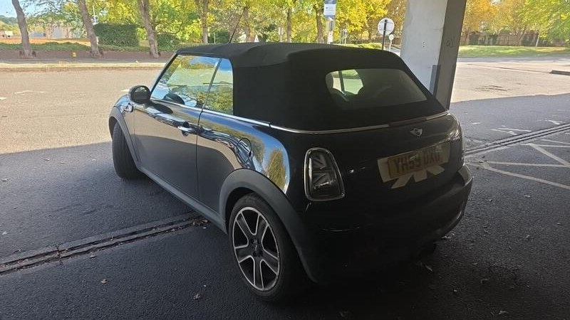
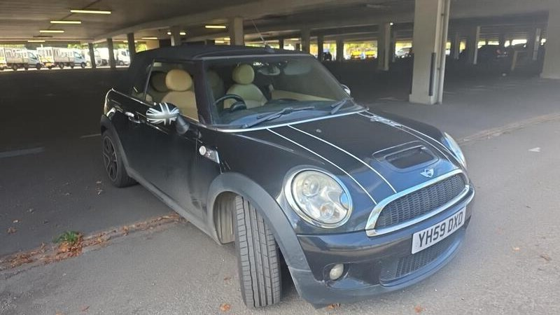
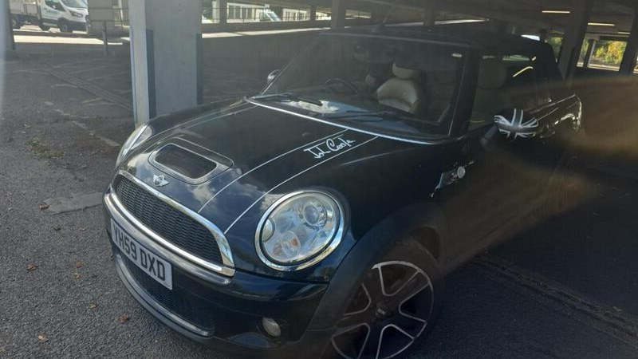
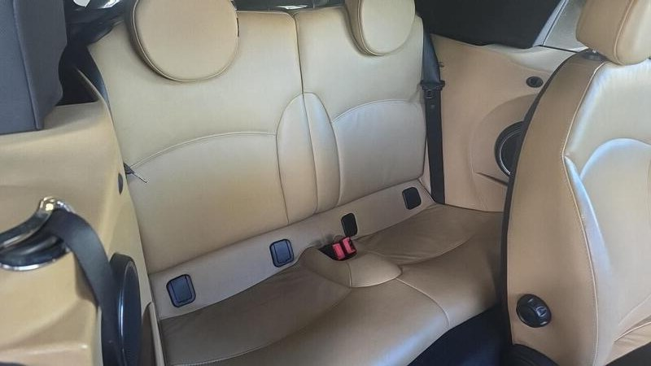

Seller photos from the AutoTrader ad.
MINI Convertible 1.6 Cooper S
A cheap Cooper S, but the ad says little. Get the MOT and history first.
Key facts
| Price | £2,000 |
|---|---|
| Year | 2009 |
| Miles | 84,950 |
| Model | MINI Convertible 1.6 Cooper S |
| Colour | Black |
| Registration | 2009 (59 reg) |
| Owners | 4 owners |
| Service history | Not stated |
| MOT (seller's text) | Not stated |
| Seller | Trade |
| Location | Enfield |
| From GU7 | 40 mi (AutoTrader) |
| Listed on AutoTrader | 14/10/2026 |
| Checked | 15 October 2026 |
Why buy it
- Cooper S (AutoTrader spec) for £2,000
- 84,950 miles, 4 owners
- Clear history check (ad)
Things to check
The ad text is generic: no MOT date or service history given, so ask for both before travelling
Turbo Prince engine (2009): listen for timing-chain rattle, look for oil leaks
The seller's photos were uploaded upside down (we flipped them); see the car in person
- MINI Convertible R52/R57 weak spots
Not flagged as a major issue in our sources; check for water ingress via roof drains and seals. R52 CVT auto fails (avoid); supercharged R52 power-steering pump; pre-Nov 2011 Prince timing-chain tensioners; roof hydraulics £395–495 average repair, R57 roof from ~£1,735.
Seller says (extract)
“balanced driving experience practical approach to efficiency comes with a clear report This 2009 MINI Convertible Cooper S is a well-maintained example of this iconic open-top model. The vehicle has undergone a thorough history check and comes with a clear report, providing peace of mind regarding its background. As a Cooper S variant, it combines the classic MINI design with the performance of a 1.6L petrol engine, offering a balanced driving experience for those who enjoy the flexibility of a convertible. The Cooper S stands out for its practical approach to efficiency, managing to achieve 44 mpg. This level of fuel economy is particularly impressive for a car with this level of performance, making it a sensible choice for daily driving. Furthermore, the vehicle is designed with low CO2 emissions in mind, which helps to reduce its environmental impact compared to many other vehicles in its class. These features demonstrate that it is possible to enjoy a spirited drive without compromising on running costs or efficiency.…”